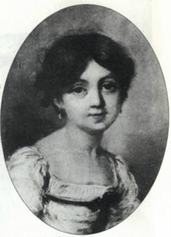

George Sand ưa nhấn mạnh sự kiện là do chính nguồn gốc gia đình mà bà thuộc về hai giới hết sức khác biệt. Giới quý tộc về bên nội, giới bình dân về bên ngoại. Vào thời kỳ hậu – cách mạng mà người ta mơ hòa giải xã hội, bà thấy nguồn gốc của mình như một biểu trưng cho sự liên kết các cực, cho phép bà thừa kế mọi tiềm năng của một dân tộc. Amandine – Aurore – Lucile Dupin sinh ngày 12 tháng Messidor năm XII (1 tháng Bảy năm 1840) ở số nhà 15 (ngày nay là nhà số 46) phố Meslée hay Meslay, tại Paris.

Về bên nội, Aurore là dòng dõi của Maurice de Saxe, vị anh hùng trận Fontenoy và của nhiều chiến thắng khác, sau thành Thống chế nước Pháp. Ông có với Marie Rainteau một con gái ngoài giá thú: đó là bà nội của George Sand; được nuôi dạy tại nữ học hiệu Saint – Cyr, bà kết hôn với Louis Claude Dupin de Francueil, sáu mươi mốt tuổi khi bà hai mười chín, và sống với ông rất hạnh phúc, như sau này bà tâm sự với cháu gái. Xuất thân từ giới đại tài chính, ông qua đời trước Cách Mạng ba năm, để lại cho bà một gia sản khá lớn. năm 1793, bà tậu cơ ngơi Nohant, nhưng có bị giam giữ ít lâu dưới thời Khủng bố. Con trai bà, Maurice Dupin, sinh năm 1778, ước mơ vinh quang trong ngành quân sự và gia nhập đội Cộng Hoà. Anh lập công trong cuộc viễn chinh sang Ý, đặc biệt ở Marengo. Cũng ở bên ý, Maurice gặp Antoinette Sophie – Victoire Delaborde, bấy giờ đang là tình nhân của một chuẩn tướng. Nguồn gốc tầm thường, quá khứ hơi lộn xộn của thiếu phụ khiến Maurice giữ bí mật việc kết hôn tiến hành ngày 5 tháng Sáu năm 1804, một tháng trước khi George Sand tương lai chào đời.
Sự nghiệp quân sự của Maurice Dupin tiếp tục cùng Đại quân: các cuộc viễn chinh sang Bavière, sang Phổ, sang Ba Lan và Tây ban Nha (ở đó Maurice là trợ lý cho hoàng thân Murat). Người vợ, lại có mang, sang Tây Ban Nha với chồng cùng cô bé Aurore 4 tuổi. Vậy là George Sand, cũng như Victor Hugo, có tuổi thơ in dấu của bản anh hùng ca Napoléon và của cuộc chiến khủng khiếp tại Tây Ban Nha. Những hình ảnh không thể nào quên đã khắc sâu vào ký ức những đứa trẻ còn rất non nớt về sau sẽ trở thành các đại văn hào lãng mạn chủ nghĩa. Cuối tháng 7 năm 1808, trở về Nohant, tiếp theo là hai biến cố đau thương: tháng 9, em trai George Sand chết, được một tháng tuổi, rồi đến người cha, vì ngã ngựa ở gần La Châtre. (vùng Creusse)
Sau này nhà văn sẽ dành một phần lớn trong Truyện đời tôi để kể câu chuyện của cha mẹ, nhất là người cha? Sự hòa hợp các tầng lớp xã hội mà Sand mơ ước, bà đã cảm nhận những khó khăn ngay từ thời thơ ấu, và cảm nhận một cách đau đớn. Bà Daupin de Francueil, muốn đảm trách việc giáo dục cô bé, đã khiến người mẹ từ bỏ quyền giám hộ. George Sand tương lai sống thời thơ ấu ở Nohant, với các cuộc đến thăm ngắn ngủi của mẹ, và những khi bà nội nghỉ đông tại Paris thì cô bé gặp mẹ nhiều hơn. Cô bé thấy mình bị giằng xé giữa hai người thể coi là hai bà mẹ, cô yêu mến cả hai, nhưng cảm nhận được sự thù địch sâu xa giữa họ. Cho nên bộ tự truyện sau này sẽ bị lôi kéo bởi những nẻo đường khác nhau: lý tưởng hóa mối tình của bố mẹ, thiên tình sử bên Ý và sự ra đời của mình (“Ngày hôm ấy mẹ tôi mặc một tấm áo dài đẹp màu hồng, còn cha tôi đang chơi vĩ cầm Crémone của ông”, một truyện thần tiên), nhưng cũng diễn tả cả nỗi đau thực sự sau này của mình và biện hộ cho mẹ về việc hầu như bỏ rơi con, sự bỏ rơi có lẽ do ưu thế kinh tế của bà nội nhiều hơn là do điều mà Sand không thể hình dung nổi như thái độ thờ ơ.
George Sand, nhìn chung thường ít gạch xóa bản thảo, để lộ niềm bối rối này qua cách viết đầy khăn khoăn dằn vặt ở những đoạn liên tưởng đến mẹ.
Nhà văn cũng muốn, một cách hết sức công bằng, bộc bạch món nợ đối với người bà mà tính cách mạnh mẽ đã in dấu lên mình. Nhờ bà nội; George Sand được biết chế độ cũ, về mặt thời gian hãy còn rất gần, nhưng sự đứt đoạn là Cách mạng đã đột ngột đẩy lùi thật xa vào dĩ vãng. Ngoài ra, Nohant là chốn buông neo đích thực của Sand. Bà sẽ du hành, bà sẽ ở Paris, nhưng giống như Antée, bà luôn cảm thấy cần lấy lại sức mạnh từ mảnh đất của thời thơ ấu nơi mà sau này bà muốn sẽ là chốn yên nghỉ cuối cùng cho mình. Chính từ Nohant mà bà cảm thấy niềm say mê đối với miền quê và chính xác hơn là đối với miền Berry, sẽ là khung cảnh cho nhiều tiểu thuyết của bà. Cũng từ nơi đây mà bà có được sức khoẻ cường tráng ít khi suy giảm. Jean Louis François Deschartres, trước kia là gia sư của người cha, trở thành gia sư cho cô con gái, và sự đào tạo về trí tuệ của Aurore, mặc dù lộn xộn đôi chút, về tổng thể vững vàng hơn sự đào tạo mà đa số các cô gái thời đó được hấp thụ. Thư viện của bà nội, người từng quen biết Jean Jacques Rousseau, có nhiều sách, và cô bé thỏa mãn được niềm đam mê đọc sách sẽ bền vững nơi cô. Bà nội chơi phong cầm và hát; chính nhờ bà mà Sand có được cơ sở của một sự giáo dục về âm nhạc nghiêm chỉnh hơn sự giáo dục của rất nhiều nhà văn lãng mạn. Nhưng trong Truyện đời tôi, bà chú ý nhắc nhở rằng mẹ bà thuộc một gia đình bán chim, rằng con chim như một vật tổ của bà: bà nội, đó là âm nhạc bác học, mẹ, đó là âm nhạc của thiên nhiên, cả âm nhạc dân gian nữa; chúng ta sẽ gặp lâi hai phương diền này của lĩnh vực âm nhạc trong sáng tác của bà, và chúng ta sẽ thấy Consuelo hoà giải các phương diện đó ra sao.
Vào thời ấy, bất kỳ một sự giáo dục tốt nào cũng phải bao gồm một giai đoạn học tập trong một tu viện nữ. vậy là bà Dupin de Francueil gửi cô cháu nội đến với các nữ tu người Anh dòng thánh Augustin ở phố Fossés –Saint –Victor ( phố Cardinal – Lemoine ngày nay). Tại đó Aurore học một ít tiếng Ý và tiếng và tiếng Anh, nhưng đặc biệt là kết bạn và tiếp nhận được niềm thích thú trao đổi thư từ; các cô thiếu nữ này viết cho nhau những bức thư đúng là những tiểu thuyết thực sự. Chắc hẳn cũng từ nhà tu này mà nảy sinh trong cô thiếu nữ Aurore giấc mơ tu viện dai dẳng, tái xuất hiện trong thời gian ở Majorque, trong Lélia và Spiridion. Aurore trải qua một cơn khủng hoảng thần bí; sau này, dù tỏ ra hết sức độc lập đối với các Giáo hội, nữ tiểu thuyết gia vẫn nhạy cảm với hiện tượng tôn giáo và sẽ có khả năng sáng tạo nên các nhân vật tu sĩ và nữ tu; niềm tin ở Chúa không mấy khi rời bỏ bà, nhưng là một Chúa giống như trong Phát biểu về tín ngưỡng của phó giám mục miền savoie hơn là Chúa của Giáo hội thời Trùng hưng.
Bà nội, người con của các triết gia Ánh sáng, có lẽ lo ngại vì tính chất thần bí này, hoặc chỉ đơn giản muốn lại được thấy cháu ở nhà, bèn đón cô về Nohant. Tại đây George Sand tương lai tiếp tục đọc các nhà văn thế kỷ XVIII, nhưng cũng đọc cả các tác phẩm mới hơn: Atala, Tinh anh đạo Thiên chúa … Bà Dupin de Francueil, cảm thấy mình ốm yếu, những muốn gã chồng cho cháu gái trước khi qua đời; nhưng không làm được điều ấy. Sau khi bà mất (26 tháng Chạp năm 1821), mẹ của Aurore định lấy lại uy quyền đối với con gái, nhưng bà vụng về và không hiểu được những ham muốn tìm hiểu về trí tuệ. Việc mẹ con gặp lại nhau kết thúc bằng một thất bại. Được gia đình Du Plessis là bạn bè của cha mời về cơ ngơi ở gần Melun, Aurore gặp tại đó Casimir Dudevant, cũng như cô được sinh ra từ một cuộc hôn nhân bất tưong xứng (giữa một nam tước thời Đế chế và một người hầu gái); tuy vậy sự trùng hợp này không tạo ra được sự đồng cảm và đồng tư tưởng. Cuộc hôn nhân của họ (cử hành ngày 17 tháng Chín năm 1882) sẽ là một tai họa. Chín tháng sau, Maurice ra đời, đứa con trai vô cùng yêu dấu, mà người ta có thể coi là “tình yêu đích thực của George Sand”. Nhưng sự ra đời này không đủ để đôi vợ chồng này xích lại gần nhau, mà mọi sự đổ vỡ bắt đầu từ đó.
Những năm đầu tiên của cuộc hôn nhân bộc lộ sự xung khắc, bùng ra khi họ ở Nohant cũng như khi đi du lịch. Vào tháng bảy – tháng tám năm 1825, họ đến núi Pyrénées, nơi Aurore hoan hỉ khám phá những phong cảnh hung vĩ. Tại đó Aurore quen Aurélien de Sèze, một luật sư trẻ người Bordeaux hết sức hấp dẫn. Năm 1827, Aurore đến dưỡng bệnh ở vùng nước suối Mont – Dore: quả thực cô bị căn bệnh mà giá như vào thời này chúng ta sẽ gọi là rối loạn tâm lý. Cô cũng đến khám một thầy thuốc tại Paris, ở đó cô gặp lại Stéphane Ajasson de Grandsagne, chàng trai thuộc gia đình quý tộc gạp gỡ tại Nohant sáu năm trước. Và bởi Solange con gái cô ra đời ngày 13 tháng Chín năm 1828, người ta có thể cho rằng Ajassion de Grandsagne là bố của đứa con thứ hai này. Gia đình Dudevant bất hòa hoàn toàn. Casimir tán tỉnh các cô hầu, uống rượu, tỏ ra thô bạo, còn người thiếu phụ sống một cuộc đời ngày càng độc lập. Cuối cùng hai vợ chồng đồng ý về một sự thoả thuận: Casimir ở lại Nohant, Aurore sống một nửa thời gian trong năm tại Paris.
Trong thời kỳ khá rối ren của đòi mình, Sand đã bắt đầu viết và thoạt tiên là viết nhật ký hay truyện hành trình: Hành trình đến nhà ông Blaise, Hành trình đến Auvergne, hành trình sang Tây ban Nha, nhưng cũng viết cả Couperies và một truyện ngắn. Người mẹ đỡ đầu. Ngày 4 tháng Giêng năm 1831, khi rời Nohant đến Paris gặp gỡ người tình là Jules Sandeau, Sand mang theo một tiểu thuyết còn đang dang dở, Aimée. Mặc dù tỏ ra có năng khiếu hiển nhiên về hội họa, điều này được chứng minh bởi những bức chân dung do Sand vẽ, song từ nay trở đi bà chuyên tâm viết, thế nhưng bà sẽ phải giành lấy cho mình sự độc lập. bà cùng viết với Sandeau Người mãi biện, ký tên là “Alphonse Signol”, rồi họ ký “J.Sand” cuốn Hồng và Bạch hay Nữ diễn viên và nữ tu sĩ, tác phẩm này đã đáng chú ý hơn. Biết được những gì là của Aurore và những gì của Sandeau là vấn đề khó. Nhưng phê bình nghiên cứu gần đây nhất có khuynh hướng gán một phần ngày càng lớn cho George Sand tương lai.
Sand quen Hennri de Latouche, người miền Berry, chủ báo Le Figaro, bấy giờ chỉ là một tờ báo nhỏ. “Latouche […] quăng cho tôi một đề tài và cho tôi một mẩu giấy nhỏ trên đó phải làm sao viết xong được đề tài “Tự thuật, tII,tr.160). “Đấy là một người bạn, và đặc biệt đây là một ông thầy ghen tuông do bản chất, như ông lão Porpora mà tôi từng miêu tả trong một cuốn tiểu thuyết của tôi. Khi Latouche đã ấp ủ một trí tuệ, đã phát triển một tài năng, anh không còn muốn cho một nguồn cảm hứng khác hay một sự giúp đỡ khác, ngoài anh dám mon men lại gần trí tuệ ấy, tài năng ấy nữa” (Tự thuật, TII, tr. 154). Ông thầy chuyên chế, hẳn như vậy rồi, nhưng chẳng phải là không hữu ích cho người học việc. Sand cũng cộng tác với tờ Thời trang, với Tạp chí Paris, và làm quen với nhiều nhà phê bình, đặc biệt là Auguste Hilarion de Keratry, người khuyên Sand hãy làm ra những cuốn sách! Bà gặp Honoré de Balzac, được nhà văn đề tặng cuốn Hồi ký của hai thiếu phụ có chồng. Thế là bà được tiến cử vào các giới văn chương.
Latouche và Sandeau (mà Sand đoạn tuyệt hẳn vào tháng Ba năm 1833) đã hữu ích, nhưng chẳng bao lâu bà cảm thấy cần bay bằng đôi cánh của chính mình. Thế là bà được biết niềm vui của việc viết, nhưng cũng biết cả khổ đau. “Khi bắt đầu viết Indiana tôi cảm thấy một niềm xúc động rất mạnh và rất đặc biệt, không giống chút nào với những gì tôi từng cảm nhận trong những thể nghiệm trước đây. Nhưng xúc động ấy nặng nề hơn là dễ chịu”. (Tự thuật, tII, tr.164). Liên tiếp, ba cuốn tiểu thuyết khiến bà được biết tiếng: Indiana ( 1832), Valentine (1832), Lélia ( 1833). Từ nay bà ký tên “George Sand”. “Sand”, là một nửa tên họ của Sandeau, còn “George” có một âm vang thôn dã dội chiếu lại Berry, ngay cả khi việc thiếu chữ “s” có cái gì mang tính chất Anh quốc. Các thành tựu của những năm đầu tiên đã được kết hợp lại như vậy đó. Tên này không phải do người ta cho bà (mặc dù Latouche có gợi ý); bà tự đặt nó cho mình, bà đã giành được nó bằng lao động văn chương của mình.
Cuối cùng bà đã tìm được tự do hay chưa? Trong căn hộ nhỏ số 19, đường Malaquais, do Latouche nhường cho, nơi bà sống một mình, nhưng bao con người nổi tiếng từng đến thăm: Balzac, Marie Dorval, Liszt, Marie d’Agoult, Mérimée, Lamennais, Musset? Có và không.
“Tôi tưởng mình đã đạt được mục đích theo đuổi từ lâu, đạt được sự độc lập với bên ngoài và làm chủ được cuộc sống riêng của bản thân: tôi vừa gắn chặt chân mình vào một chuổi xích mà mình đã không dự liệu” (Tự thuật, t II, tr. 181). Chuỗi xích của những người cầu cạnh, cả chuỗi xích của những sự đặt bài viết: François Buloz, háo hức muốn chiêu mộ các tài năng trẻ, đưa Sand vào Tạp chí Hai thế giới do ông đứng đầu. Casimir? Sand gần như đã giải thoát khỏi Casimir, nhưng vẫn còn phải gặp lại ông khi trở về Nohant; và việc ly thân trước pháp luật sẽ chỉ được phán quyết sau những cảnh rầy la nặng nề, vào năm 1835.